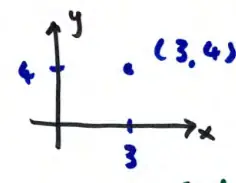
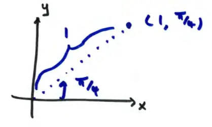
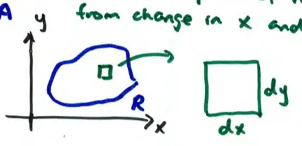

16.3 Double Integrals in Polar Coordinates
In rectangular coordinates, a point is located as (x, y).

Polar Coordinates
Polar: (r, θ)
- r: displacement from origin
- θ: angle of line thru origin and the point

Conversion
\[x^2 + y^2 = r^2\]
\[x = r \cos \theta\]
\[y = r \sin \theta\]
In Cartesian
\[\iint_R f(x,y) dA\]
dA = area of small patch of region R from change in x and change in y

dA = dx dy or dy dx